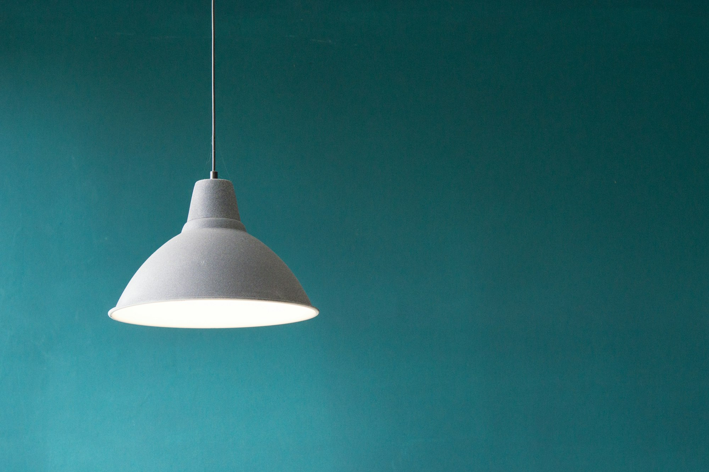
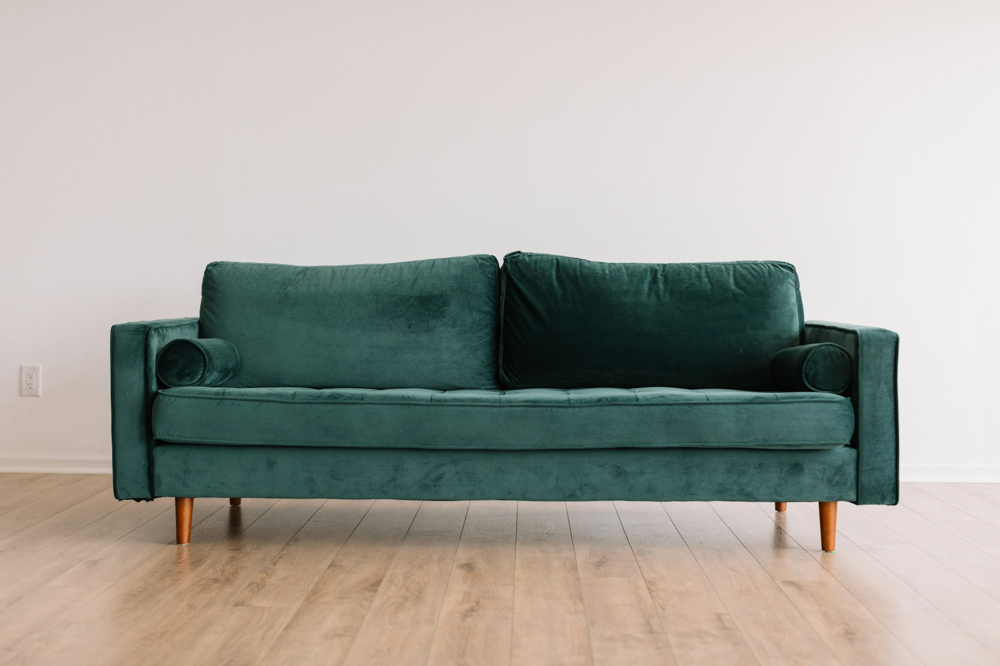

Small living rooms often feel like a puzzle with missing pieces. However, at THE Sanctuary, we believe that limited square footage is an invitation for more intentional, refined styling. An editorial-look living room isn't about the size—it's about the visual hierarchy and the quality of materials you choose to inhabit your space.
1. The 'Float' Technique
One of the most common mistakes in small living rooms is pushing all furniture against the walls. This unintentionally highlights the boundaries of the room. Instead, "float" your sofa away from the wall. Even a few inches create a shadow line that adds depth and the illusion of more space.
Floating fixed pieces creates a sense of airy flow and movement.
2. Invest in Visual Weightlessness
To keep a room feeling open, choose pieces with 'visual weightlessness.' This means furniture with slim legs (tapered wooden or thin metal) that allows the eye to see the floor underneath. The more floor visible, the larger the room feels.

The Sculptural Brass Floor Lamp
$185.00Accent lighting is the secret to an editorial feel. This piece adds verticality and a warm, aged glow without taking up valuable floor space.
View on Amazon3. The Power of Textural Layering
When you can't add more furniture, add more texture. A neutral palette survives on the contrast between materials—the roughness of a jute rug against the softness of a linen throw. This creates "layers of calm" that draw the eye in.

Linen, wool, and wood: a trifecta of natural luxury.
Conclusion: Consistency is Luxury
The secret to a convincing, high-end small room is maintaining a consistent color story. When the eye doesn't get "tripped up" by jarring color changes, the space feels continuous and expansive. Focus on quality over quantity, and your sanctuary will follow.